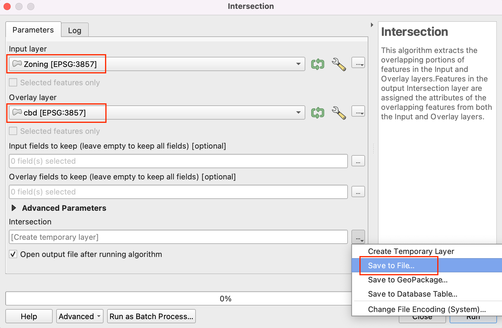
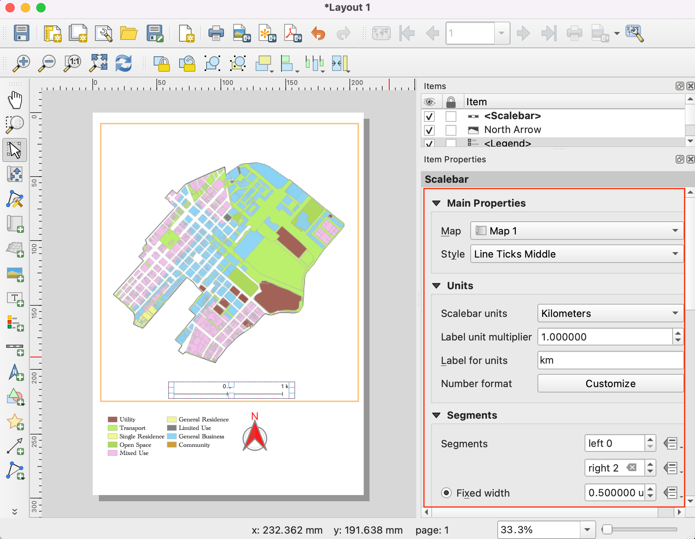

Ujaval Gandhi
Ujaval GandhiKreiranje mape korišćenja zemljišta (QGIS3)¶
Zoniranje definiše i reguliše koje vrste namene su dozvoljene na određenim parcelama i navodi zahteve i smernice za projektovanje i razvoj. U ovom tutorijalu ćete naučiti kako da pristupite skupovima podataka o parcelama, stilizujete ih prema atributima zoniranja i kreirate mapu.
Pregled zadatka¶
Radićete sa skupom podataka o parcelama zemljišta sa informacijama o zoniranju i kreiraćete mapu koja prikazuje obrazac zoniranja širom centralnog poslovnog regiona Kejptauna.

Druge veštine koje ćete naučiti¶
Kako pristupiti i preuzeti podatke iz ArcGIS REST-a u QGIS-u.
Kako izdvojiti karakteristike iz sloja koje se presecaju sa graničnim slojem.
Kako spojiti različite podkategorije iz kategorizovanog renderera.
Dobijte podatke¶
Podatke za tutorijal možete pronaći na portalu otvorenih podataka Kejptauna - https://odp-cctegis.opendata.arcgis.com. Uvešćemo podatke sa portala koristeći ArcGIS REST URL adresu servera i pripremićemo tri sloja pomenuta u nastavku.Podatke za tutorijal možete pronaći na portalu otvorenih podataka Kejptauna - https://odp-cctegis.opendata.arcgis.com. Uvešćemo podatke sa portala koristeći ArcGIS REST URL adresu servera i pripremićemo tri sloja pomenuta u nastavku.
Zoniranje: Poligonski shapefile sa zoniranjem i opisom za parcele zemljišta koje imaju jedno zoniranje - pričvršćeno za područje centralnog poslovnog centra Kejptauna.
Sloj podeljenog zoniranja: Forma poligona sa kodom zoniranja i opisom za parcele zemljišta koje imaju višestruko zoniranje - pri čemu je svaki poligon podeljen na poligone sa jednom zonom.
Područje centralnog poslovnog centra Kejptauna: Poligon koji razgraničava područje centralnog poslovnog centra Kejptauna.
Hajde da pogledamo korak po korak pripremu skupa podataka za ovaj tutorijal.
Idite na portal podataka - https://odp-cctegis.opendata.arcgis.com/. Pretražićemo podatke o centralnom poslovnom području Kejptauna u traci za pretragu i kliknuti da bismo dalje pregledali.
Kliknite na Prikaži sve detalje da biste istražili dostupne usluge za dobijanje podataka.

Pomerite se nadole da biste pronašli Prikaži izvor podataka i kliknite na njega.

U direktorijumu ArcGIS REST servisa, idite na Home i kopirajte URL adresu te stranice. Kopirana URL adresa izgleda ovako - https://citymaps.capetown.gov.za/agsext1/rest/services.

Sada otvorite QGIS i idite na .

Lista izvora podataka se vidi u levom panelu. Pomerite se nadole da biste pronašli . Kliknite na new da biste kreirali novu vezu sa serverom.

U Detalji veze, navedite Naziv
Portal otvorenih podataka Kejptaunai nalepite kopirani URL kao unos za URL.
Kliknite na Ok, a zatim na Connect da biste videli fascikle sa podacima dostupne na serveru.

Sada ćemo pretražiti sva tri sloja potrebna za tutorijal iz baze podataka. Prvo, otvorićemo sloj „Cape Town CBD“ u QGIS-u. Proširite fascikle da biste pregledali slojeve. Puna putanja do sloja je . Izaberite sloj i kliknite Add.

Zatvorite da biste videli sloj dodat u QGIS. Kliknite na da biste centrirali i prikazali sloj na platnu.

Sada ćemo dodati sloj „Zoniranje“ koristeći Data Source Manager. Povežite se sa
Cape Town Open Data Portali pregledajte slojZoniranje. Puna putanja je . Ovo je veoma veliki sloj, zato obavezno označite polje Zahtevaj samo obeležja koja se preklapaju sa trenutnim obimom prikaza kako biste izbegli učitavanje svih obeležja dostupnih u sloju. Ako ovo zaboravite, učitavanje sloja može potrajati dugo. Kliknite na Dodaj da biste otvorili u QGIS-u.
Slično tome, dodajte sloj
Split_Zoning. Puna putanja je - .Možemo videti da su sva tri izvorna sloja otvorena u QGIS-u. Želimo da isečemo slojeve „Zoniranje“ i „Podeljeno zoniranje“ na granični sloj „Centar Kejptauna“. Prvo, sačuvajmo sva tri sloja lokalno kao shapefile-ove. Kliknite desnim tasterom miša na sloj „Centar Kejptauna“. Potražite Izvezi i kliknite na Sačuvaj elemente kao.

Podesite format ESRI Shapefile i pregledajte lokalnu fasciklu u kojoj želite da sačuvate shapefile-ove. Sve slojeve vezane za ovaj tutorijal sačuvaćemo u jednoj fascikli sa podacima. Sačuvajte sloj kao
cbd. Ostavite sve ostale opcije podrazumevane i kliknite na OK. Slično tome, izvezite druga dva sloja kaoZoning.shpiSplit Zoningu istu fasciklu.
Uklonite slojeve učitane sa servera. Izaberite sva tri sloja i kliknite na ikonu Ukloni sloj/grupu. Želimo da izdvojimo elemente iz slojeva
ZoniranjeiPodeli zoniranjekoji se presecaju sa granicomcbd.
Idite na iz trake menija.

У алатној траци потражите Пресек алгоритам и двапут кликните да бисте отворили.

Izaberite
Zoningkao Input layer icbdkao Overlay layer. Ostavite ostale opcije podrazumevane i nastavite sa čuvanjem izlaza u datoteku.Sačuvajte izlazni sloj kao
zoning_cbdu fascikli sa podacima i kliknite na Pokreni.
U zavisnosti od vaših podešavanja obrade, videćete neke greške ili upozorenja prikazana u kartici Log. Ulazni sloj ima neke nevažeće geometrije i preskače se tokom izvršavanja preseka. Popravićemo geometrije slojeva „Zoniranje“ i „Podeljeno zoniranje“ pre nego što uzmemo presek da bismo izvukli sve geometrije.

Uklonite izlaz preseka iz QGIS-a i fascikle sa podacima. Potražite alatku u alatkama za obradu. Dvaput kliknite da biste otvorili.
Izaberite
Zoningkao Input layer. Zadržite sve ostale ulaze kao podrazumevane i sačuvajte izlazni sloj kaozoning_fixed.shpu folderu sa podacima klikom na Save to File. Kliknite na Run. Ponovite postupak za fiksiranje geometrija na slojuSplit Zoningi sačuvajte sloj sa fiksiranim geometrijama kaosplit_zoning_fixed.shp.
Uklonite slojeve „Zoning“ i „Split Zoning“. Nastavićemo sa izdvajanjem karakteristika iz slojeva „zoning_fixed“ i „split_zoning_fixed“ koji se presecaju sa „cbd“. Potražite iz alata za obradu i dvaput kliknite da biste otvorili.

24.Select Zoning_fixed as Input layer and cbd as Overlay layer to perform intersection as described in steps 18 and 19. Save the output as zoning_cbd and repeat the same for split_zoning_fixed layer and save the output layer as split_zoning_cbd.

Radi lakšeg snalaženja, možete direktno preuzeti kopiju sva tri prethodno obrađena sloja sa donjih linkova:
Procedura¶
Otvorite QGIS. Kliknite na ikonu da biste dodali slojeve na kojima ćete raditi za tutorijal.

Pređite na karticu Vector i koristite dugme za pregledanje da biste pronašli fasciklu u kojoj ste sačuvali obrađene shapefile-ove.

Izaberite datoteke
cbd.shp,zoning_cbd.shpisplit_zoning_cbd.shpi kliknite na Otvori.
Videćete sve tri putanje do datoteka u tekstualnom polju pored Vektorski skup podataka. Kliknite na Dodaj, a zatim na Zatvori.

Dok radimo na vežbi, važno je da sačuvamo naš rad. Idite na .

Sačuvajte projekat u direktorijumu podataka kao datoteku landuse_map.qgz. Datoteka QGIS projekta sadrži reference na slojeve podataka i čuva stilove, šablone mapa itd.

Izaberite sloj
zoning_cbdi kliknite na dugme Otvori tabelu atributa u traci sa alatkama . Imajte na umu da atributINT_ZONE_Cima kodove zoniranja, aINT_ZONE_Dopis zoniranja. Zatvorite tabelu atributa.

Sada hajde da stilizujemo sloj na osnovu ovih atributa, tako da parcele sa istim zonskim kodovima budu stilizovane u istoj boji. Kliknite na dugme Otvori panel za stilizovanje sloja u panelu Slojevi. Kliknite na padajući meni pored Jedan simbol.
Izaberite Categorized kao renderer. Izaberite
INT_ZONE_Ckao vrednost. Kliknite na Klasifikuj.
Videćete niz simbola. Svakom jedinstvenom kodu u sloju dodeljen je različit simbol boje.

Obratite pažnju da svaka kategorija zoniranja ima podkategorije. Kategorija „Opšte poslovanje (GB)“ ima dalje podkategorije kao što su „GB1“, „GB2“ i tako dalje. Za potrebe ove mape, možemo spojiti sve podkategorije u jednu kategoriju najvišeg nivoa. Držite taster Shift i izaberite sve podkategorije. Kliknite desnim tasterom miša i izaberite Spoji kategorije.

Ponovite postupak za kategorije „MU“ i „TR“. Nakon spajanja, sada možemo promeniti oznaku Legende da bude opisnija. Kliknite na oznaku Legenda da biste preimenovali klasu.

Unesite opise svake kategorije zoniranja na osnovu vrednosti datih u koloni „INR_ZONE_D“. Kako unosite te opise, videćete da se i legenda sloja u panelu Slojevi ažurira.

Sada možemo ažurirati boje i simboliku svake kategorije. Kliknite na Simbol za kategoriju.

Promenite Boja popunjavanja i Boja obrisa simbola u boju po vašem izboru.

Ponovite postupak za svaku kategoriju. Poslednja kategorija su sve ostale vrednosti. Ova kategorija sadrži sve parcele koje imaju NULL vrednosti. To je zato što te parcele imaju više kategorija zoniranja koje su im pridružene i predstavljene su u sloju split_zoning_cbd.shp. Nisu nam potrebne u ovom sloju. Izaberite ga i kliknite na ikonu - da biste uklonili tu kategoriju.

Zatim, izaberite sloj „cbd“. Promenite simbol u Simple Line i povećajte Stroke width.

Sloj „split_zoning_cbd.shp“ sadrži sve parcele kojima su nedostajali kodovi zoniranja u sloju „zoning_cbd“. Tabela atributa i vrednosti za zone u „split_zoning_cbd“ su iste kao i u sloju „zoning_cbd“. Umesto ručnog konfigurisanja simbologije za ovaj sloj, možemo kopirati/nalepiti stilove. Izaberite sloj „zoning_cbd“, kliknite desnim tasterom miša i izaberite .

Sada izaberite novododati sloj
split_zoning_cbd, kliknite desnim tasterom miša i izaberite .
Videćete da se ista simbolologija primenjuje na poligone u sloju „split_zoning_cbd“. Stilizovanje i legenda su sada završeni.

Stilizovali smo naše slojeve i kreirali oznake legendi. Sada hajde da kreiramo mapu koristeći ove stilizovane slojeve zajedno sa elementima mape kao što su traka razmere, strelica severa, oznake itd. QGIS dolazi sa Raspored za štampanje koji omogućava sastavljanje mapa. Idite na . Kada se od vas zatraži ime, možete ostaviti polje prazno i kliknuti na U redu.

U prozoru Raspored za štampanje videćete platno. Kliknite desnim tasterom miša i izaberite Svojstva stranice.

Podesite Orijentacija na
Portret. Zatim, idite na .Držite levi taster miša i nacrtajte pravougaonik na platnu. Ovo je okvir mape koji će sadržati mapu iz glavnog QGIS prozora. Na kartici Svojstva stavke, koristite ikonu Interaktivno uređivanje obima mape da biste pomerali/zumirali sadržaj okvira mape.
Pomerite se nadole na kartici Svojstva stavke i označite opciju Okvir. Proširite je i izaberite Boja za ivicu okvira. Takođe možete povećati Debljina.

Okvir mape je sada spreman. Hajde da dodamo ostale elemente. Idite na .

Prevucite pravougaonik gde želite da postavite legendu. Kada ga dodate, pomerite se nadole na kartici Svojstva stavke i opozovite izbor dugmeta Automatsko ažuriranje kako bismo mogli ručno da izmenimo stavke legende.

Imamo 2 sloja sa identičnim legendama, tako da možemo ukloniti jedan od njih. Izaberite sloj
split_zoning_cbdi kliknite na ikonu Ukloni izabrane stavke() iz legende. Slično tome, uklonite slojcbdiz legende.Kliknite desnim tasterom miša na sloj „zoning_cbd“ i označite opciju „Skriveno“.

Pomerite se nadole i proširite odeljak Kolone. Označite opciju Podeli slojeve i povećajte broj na 2.

Pomerite se nadole do odeljka Razmak. Podesite razmak između različitih elemenata dok legenda ne bude jasno čitljiva.

Možete promeniti stil i veličinu fontova u legendi iz svojstava Fontovi i formatiranje teksta. Kada završite, idite na . Prevucite pravougaonik gde želite da postavite element na mapi.

Izaberite simbol po svom izboru. Pomerite se nadole i proširite SVG parametri. Promenite Boja popunjavanja i Boja linije prema svom izboru.

Sada ćemo dodati Scale Bar. Idite na . Prevucite pravougaonik gde želite da postavite element na mapi. Podesite parametre Style i Segments za skalu.
Našoj mapi je potreban naslov i druge oznake sa informacijama. Idite na .

Unesite naslov mape u odeljak Glavna svojstva. Kliknite na dugme Font u odeljku Izgled da biste podesili veličinu i stil fonta.

Dodajte druge oznake koje označavaju izvor podataka i vaše ime. Na kraju ćemo završiti našu mapu dodavanjem okvira oko bloka oznaka. Idite na .

Nacrtajte pravougaonik. Kliknite na simbol za Stil i podesite Boja popunjavanja na providnu i Boja obruba da odgovara ostalim okvirima.
Kada budete zadovoljni svojom kompozicijom, možete eksportovati rezultat. Idite na . Sačuvajte PDF u folderu sa podacima kao
capetown_zoning_map.pdf.
If you want to give feedback or share your experience with this tutorial, please comment below. (requires GitHub account)